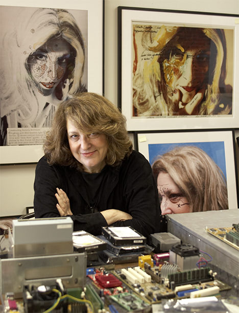
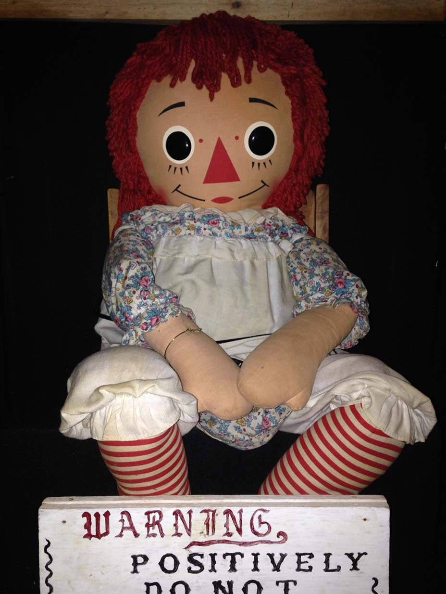
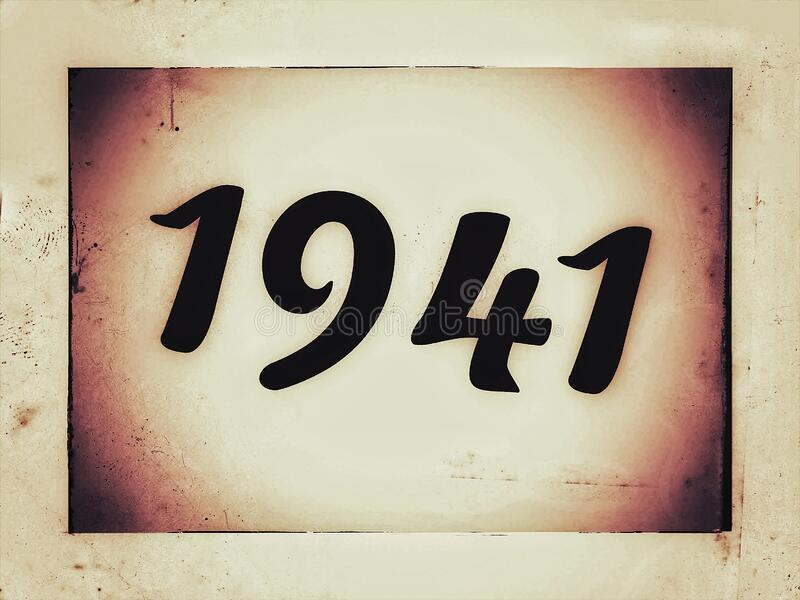
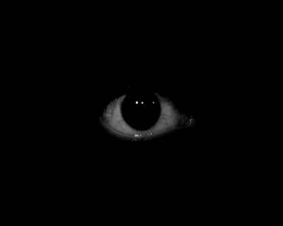
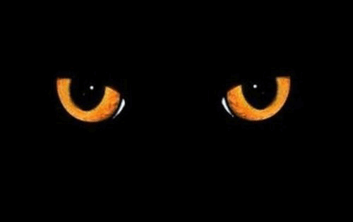
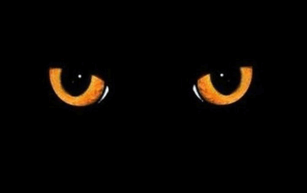
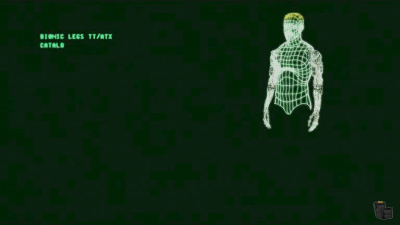
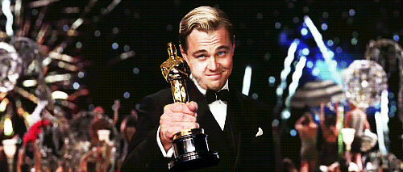

Lynn Hershman Leeson  
Born 
Lynn Hershman is currently 86 years old. She became well known in the 1960s when technology was not too well known
 

Hershman knew she wanted to become further involved in modern technology and advance the art she was currently making. 
Lynn became famous for various acclaimed art and film works. Specializing in the relationship between humans and technology. Awards she has won: 2017, USA FellowArtShip and Persistence of Vision: 2023, honorary doctorate received from Pratt 
Home